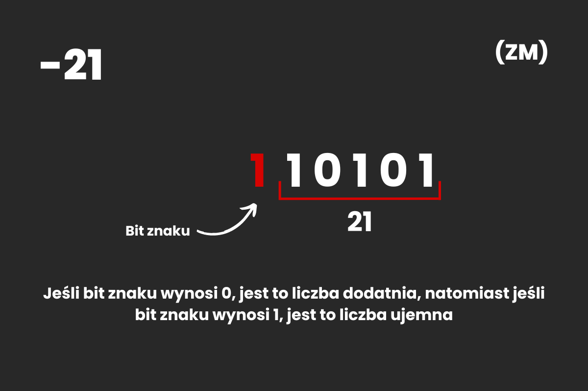
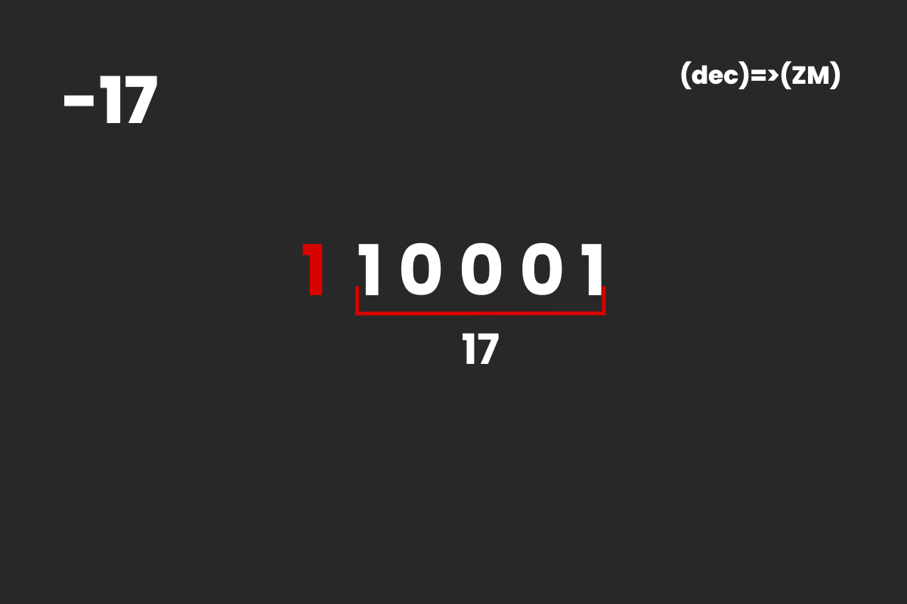
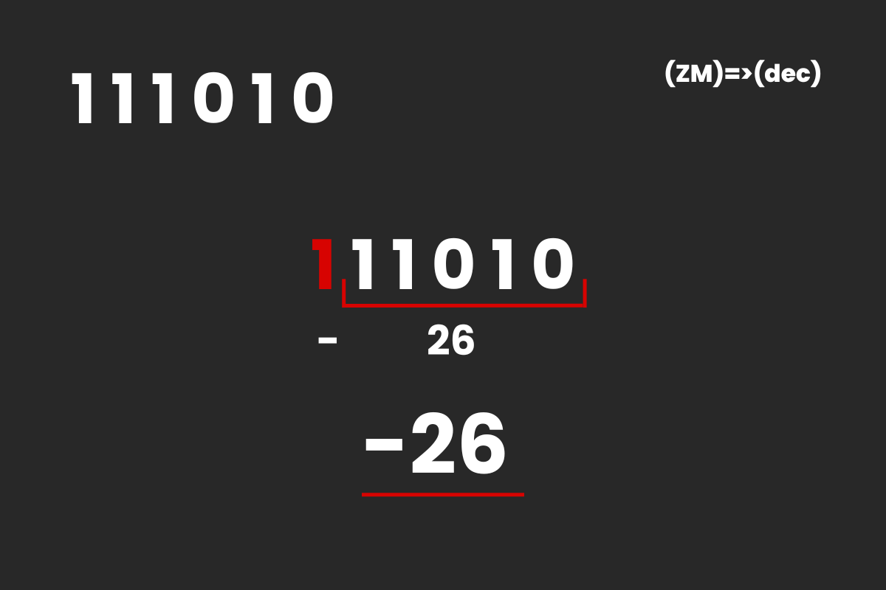

Zapis Znak-Moduł (ZM) - składa się z bitu znaku oraz bitu wartości liczby. Dla liczb dodatnich bit znaku wynosi 0, a dla ujemnych 1. Format zapisu ZM musi być ŚCIŚLE USTALONY, aby było wiadomo, który bit jest bitem znaku
Zapis ZM liczby -21
W tym zapisie napotykamy jednak na kilka problemów. Istnieją dwa zera: 0 z bitem znaku równym zero oraz 0 z bitem znaku równym 1. W tym systemie napotykamy także na błędy w operacjach artmetycznych.
Przykład
Zapisz liczbę -17 (10) w systemie ZM
Zapisujemy moduł naszej liczby w systemie binarnym, dodajemy po lewej stronie bit znaku (1 dla liczb ujemnych) i otrzymujemy wynik
Przykład
Zapisz liczbę 111010 (ZM) w systemie dziesiętnym
Oddzielamy bit znaku od modułu, następnie zapisujemy wartość modułu w systemie dziesiętnym, dodajemy bit znaku (znak minus, bit znaku wynosi 1) po lewej